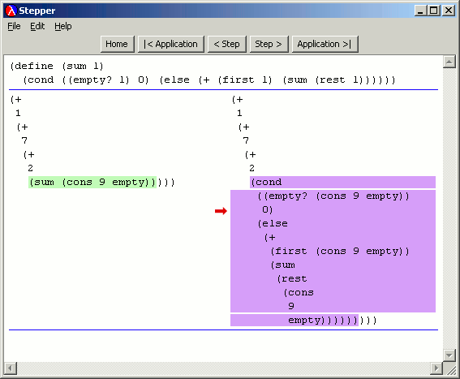
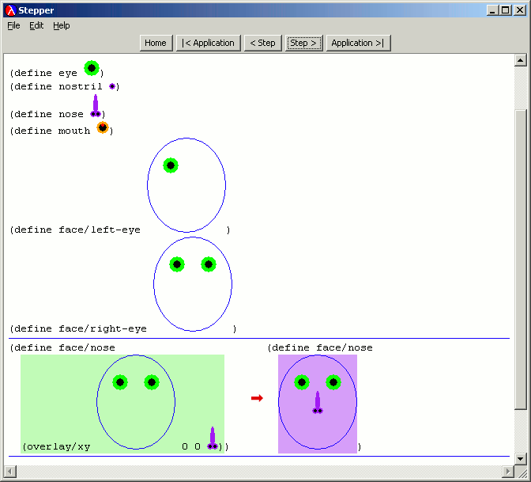

The Stepper lets users step through each reduction in their program. It uses colors to highlight the redex and the reduct. Users can step backward and forward through the reduction history. This illustrates the algebraic nature of programming.
|  |
The Stepper can even handle programs that use images as values.
|  |